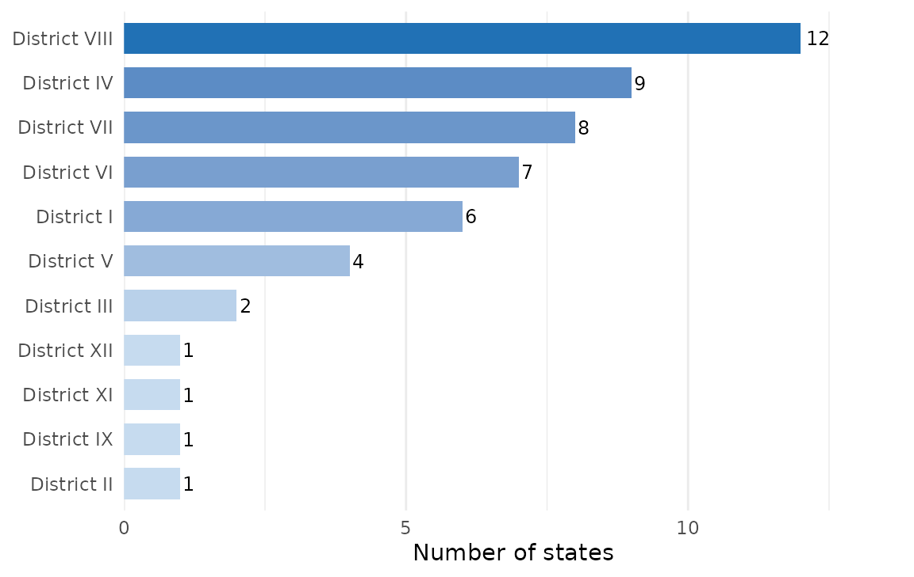

Overview
The mysterycall package provides a family of mapping
functions for visualizing physician geographic data across the United
States. These functions cover interactive Leaflet maps centered on ACOG
district boundaries, static ggplot2 maps of Hospital Referral Regions
(HRRs), and overlap maps that combine drive-time isochrones with Census
block groups. Use them to communicate where providers practice, how they
are distributed across professional districts, and which communities
fall within a given drive-time catchment area.
Base map
map_create_base() returns a leaflet map object
pre-configured for US provider mapping. It includes two tile-layer
options — CartoDB Voyager (a clean, labeled street map)
and Stadia Toner Lite (a minimal black-and-white style)
— selectable via a layer-control widget in the top-right corner. A scale
bar is added at the bottom-left. An optional title argument
accepts an HTML string that is placed in a control panel at the top-left
of the map.
library(mysterycall)
library(leaflet)
# Default view: continental United States, zoom 4
map_create_base()
# With a custom HTML title
map_create_base(title = "<strong>Ob-Gyn Provider Map</strong>")
# Zoom in on a specific region
map_create_base(
title = "Mountain West",
lat = 39.5,
lng = -111.0,
zoom = 6
)The returned leaflet object can be piped into any additional
leaflet::add*() calls to layer physician points, isochrone
polygons, or district boundaries on top of the base tiles.
ACOG district boundaries
The American College of Obstetricians and Gynecologists (ACOG)
divides the United States into eleven geographic districts that govern
regional governance and continuing-education activities.
map_create_acog_districts_sf() joins the packaged
ACOG_Districts lookup table to Natural Earth state
geometries and returns a dissolved sf polygon object — one
row per district — that is ready for mapping or spatial joins.
library(mysterycall)
# Build the sf object (requires rnaturalearth)
districts_sf <- map_create_acog_districts_sf()
# Inspect the result
class(districts_sf)
#> [1] "sf" "tbl_df" "tbl" "data.frame"
names(districts_sf)
#> [1] "ACOG_District" "Subregion" "States"
#> [4] "State_Abbreviations" "geometry"
print(districts_sf[, c("ACOG_District", "States")], n = 5)The bundled ACOG_Districts data frame contains the
underlying state-to-district mapping and can be inspected without
building the sf object:
library(mysterycall)
data(ACOG_Districts)
head(ACOG_Districts)
#> # A tibble: 6 × 4
#> State ACOG_District Subregion State_Abbreviations
#> <chr> <chr> <chr> <chr>
#> 1 Alabama District VII District VII AL
#> 2 Alaska District VIII District VIII AK
#> 3 Arizona District VIII District VIII AZ
#> 4 Arkansas District VII District VII AR
#> 5 California District IX District IX CA
#> 6 Colorado District VIII District VIII COThe table below summarises how many states each district covers:
data(ACOG_Districts)
dist_summary <- aggregate(State ~ ACOG_District, data = ACOG_Districts, FUN = length)
names(dist_summary)[2] <- "n_states"
dist_summary <- dist_summary[order(dist_summary$ACOG_District), ]
knitr::kable(
dist_summary,
col.names = c("ACOG District", "States"),
caption = "Number of US states (and territories) in each ACOG district.",
row.names = FALSE
)| ACOG District | States |
|---|---|
| District I | 6 |
| District II | 1 |
| District III | 2 |
| District IV | 9 |
| District IX | 1 |
| District V | 4 |
| District VI | 7 |
| District VII | 8 |
| District VIII | 12 |
| District XI | 1 |
| District XII | 1 |
data(ACOG_Districts)
dist_counts <- aggregate(State ~ ACOG_District, data = ACOG_Districts, FUN = length)
names(dist_counts)[2] <- "n_states"
dist_counts$ACOG_District <- factor(
dist_counts$ACOG_District,
levels = dist_counts$ACOG_District[order(dist_counts$n_states)]
)
ggplot2::ggplot(dist_counts,
ggplot2::aes(x = n_states, y = ACOG_District, fill = n_states)) +
ggplot2::geom_col(width = 0.7) +
ggplot2::geom_text(ggplot2::aes(label = n_states), hjust = -0.2, size = 3.2) +
ggplot2::scale_fill_gradient(low = "#c6dbef", high = "#2171b5", guide = "none") +
ggplot2::scale_x_continuous(expand = ggplot2::expansion(mult = c(0, 0.15))) +
ggplot2::labs(x = "Number of states", y = NULL) +
ggplot2::theme_minimal(base_size = 11) +
ggplot2::theme(panel.grid.major.y = ggplot2::element_blank())
State count per ACOG district. Districts vary from 2 (District XI — Puerto Rico / US territories) to 8 states.
Physician dot map
map_create_physician_dot() builds an interactive Leaflet
dot map from a data frame that contains lat,
long, name, and ACOG_District
columns. It layers ACOG district boundaries in red, colors each
physician dot according to their district using the viridis
"magma" palette (configurable via
color_palette), adds a small random jitter to overlapping
points, and saves the result as a self-contained HTML file plus a PNG
screenshot to output_dir.
library(mysterycall)
# Synthetic provider data — replace with your own data frame
physician_data <- data.frame(
long = c(-95.363, -97.743, -98.494, -96.900, -95.370,
-87.623, -122.431, -73.935, -84.388, -104.990),
lat = c( 29.763, 30.267, 29.424, 32.779, 29.752,
41.883, 37.774, 40.730, 33.749, 39.739),
name = paste("Physician", 1:10),
ACOG_District = c(
"District VII", "District VII", "District VII", "District VII", "District VII",
"District IV", "District IX", "District II", "District IV", "District VIII"
)
)
# Create the dot map and save HTML + PNG to a temporary directory
map_create_physician_dot(
physician_data = physician_data,
jitter_range = 0.05,
color_palette = "magma",
popup_var = "name",
output_dir = tempdir()
)The function invisibly returns the leaflet map object so you can
inspect or extend it. Requires the leaflet,
viridis, htmlwidgets, and webshot
packages; install PhantomJS with
webshot::install_phantomjs() before the first use.
Hospital Referral Regions
Hospital Referral Regions (HRRs) are the 306 geographic units defined
by the Dartmouth Atlas of Health Care to represent regional health care
markets for tertiary services. hrr() downloads the official
shapefile (~8 MB) from the Dartmouth Atlas on first use, caches it in
the user’s R cache directory, and returns an sf object in
CRS 4326. By default Hawaii and Alaska are excluded; set
remove_HI_AK = FALSE to retain all regions.
library(mysterycall)
library(ggplot2)
hrr_sf <- hrr(remove_HI_AK = TRUE)
# Quick look at the object
glimpse(hrr_sf)The returned sf object can be passed directly to
ggplot2::geom_sf() for static publication-ready maps:
ggplot(hrr_sf) +
geom_sf(fill = "#f0f0f0", color = "#999999", linewidth = 0.15) +
theme_void() +
labs(title = "Hospital Referral Regions — Continental United States")hrr_generate_maps() extends this by overlaying a
physician sf object onto a hexagonal grid, producing a count-per-cell
choropleth with Alaska, Hawaii, and Puerto Rico insets. The result is
saved as both TIFF and PNG at journal-ready resolution (600 dpi by
default).
# physician_sf must be an sf object with point geometries
hrr_generate_maps(
physician_sf = physician_sf,
trait_map = "obgyn",
honey_map = "all",
output_dir = tempdir(),
dpi = 300,
width = 7,
height = 5
)Block group overlap maps
After running create_isochrones_for_dataframe() and
calculate_intersection_overlap_and_save(), you will have
two sf objects: one with Census block group polygons (containing an
overlap column — the proportion of each block group within
the isochrone) and one with drive-time isochrone polygons (containing a
drive_time column). Pass both to
map_create_block_group_overlap() to produce an interactive
Leaflet map that shades block groups by their overlap proportion and
draws each isochrone (30 / 60 / 120 / 180 minutes) in a distinct color.
The map is exported as an HTML file and a PNG screenshot to
output_dir.
library(mysterycall)
# bg_data and isochrones_data are sf objects produced by the isochrone workflow
map_create_block_group_overlap(
bg_data = bg_data,
isochrones_data = isochrones_data,
output_dir = tempdir()
)For details on generating bg_data and
isochrones_data, see the
vignette("create_isochrones", package = "mysterycall")
vignette.